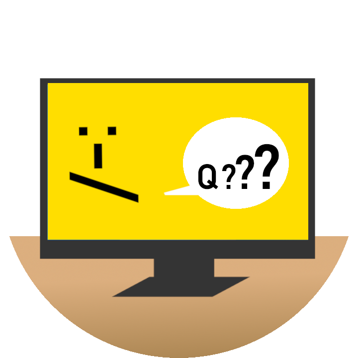

Como foi visto anteriormente, para que exista o software, precisamos, através de um algoritmo, dizer ao computador como tudo deverá ser executado.
Infelizmente, o computador não entende nosso idioma!
É como duas pessoas que falam línguas diferentes tentando se comunicar!
Para que a comunicação seja possível, utilizamos as linguagens de programação, que estabelecem padrões para essa comunicação.
Existem várias linguagens de programação no mercado, cada uma com seus diferenciais e sua sintaxe.
